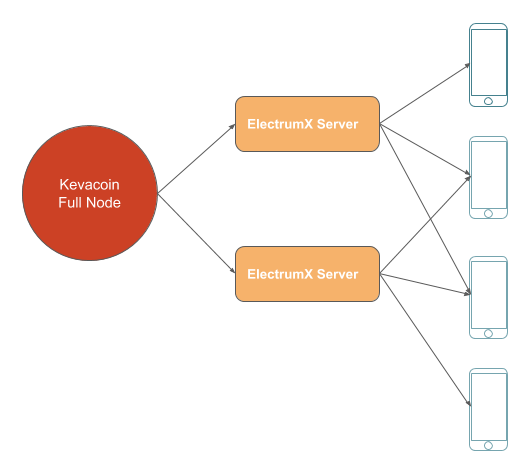

Decentralized Server for Kevacoin
August 23 2020

Our mobile wallet app 6.0.0 brings a significant new feature: reading and writing to the Kevacoin blockchain database from your mobile phone. It lays the foundation for many exciting new features in the coming months, e.g. a decentralized microblogging platform and a public digital identity system. You can try to read our official blog on blockchain by entering the shortcode 5570511 on 6.0.0 wallet.
Our mobile wallet needs to connect to a server to check balance, perform transactions, and access the blockchain database. However, the server is fundamentally different from the centralized servers we are familiar with. Kevacoin mobile wallet's server is a decentralized one, which means anyone can set up, run and connect to a server. If you do not trust the list of servers we provide, you have the freedom to use your own server. We provide an open source ElectrumX server with support for Kevacoin. This is a fork from the popular ElectrumX server project with some minimal and standard configuration changes. We plan to submit a pull-request to merge our changes to the upstream repository.
What is ElectrumX server?
If you have the desktop version of Kevacoin wallet running on your computer, you know that it needs to connect to other public nodes on the internet to get the latest blocks and transactions. We do not have this luxury on mobile phones, as phones do not have constant connections to the internet and have limited computational power and storage. To overcome this problem, a server is running the blockchain node on behalf of the mobile apps, and the mobile apps query the server to check balance, get the latest transactions related to the wallet, and broadcast the transactions. It is important to know that the mobile wallet never reveals the secret private keys to the servers. For example, if the mobile wallet wants to transfer some coins to another address, it creates and signs a transaction using its private keys, and sends the signed transaction to the server to broadcast it to the network. The mobile wallet still needs to trust the servers, because a malicious server can fake a transaction. For example, you sell an item to a person and the person pays you by Kevacoins. If your wallet connects to a server controlled by them, they can send you a fake transaction which indicates that a certain amount of Kevacoin has been transferred to your address, but actually do not happen. It is highly recommended that you connect to your own server, or a server run by someone you trust. The wallet can also connect to multiple servers and compare the results from different servers to spot potential issues.
Run your own server
To help yourself and help the Kevacoin ecosystem, we encourage you to run an ElectrumX server to provide decentralized mobile service to the community. The server's hardware requirement is quite minimal, 1 GB of RAM and 20GB of SSD should be sufficient for the near future.
Kevacoin full node
The ElectrumX server needs to connect to a Kevacoin coin full node with indexing enabled (txindex=1 in kevacoin.conf). A full node should be able to handle more than 30 ElectrumX servers.
Here is an example of kevacoin.conf:
txindex=1
rpcuser=<rpcusername>
rpcpassword=<rpcpassword>
Python 3.7
The ElectrumX server is implemented in Python and requires Python 3.7 or higher. If your server is Ubuntu 18.04 or older, you need to install and configure Python 3.7. If your server is Ubuntu 20.04, you can skip this section as it has the required Python version.
sudo apt install python3.7
sudo apt install python3-pip
python3.7 -m pip install pip
python3.7 -m pip install aiohttp
python3.7 -m pip install pylru
python3.7 -m pip install plyvel
python3.7 -m pip install aiorpcx
python3.7 -m pip install websockets
sudo apt install python3.7-dev
python3.7 -m pip install py-cryptonight
RocksDB
ElectrumX server requires either LevelDB or RocksDB to store the blockchain information. According to our experience, RocksDB is more stable than LevelDB and is therefore recommended.
To install RocksDB for Python3.7:
sudo apt-get install libgflags2.2 libgflags-dev
sudo apt-get install librocksdb-dev
sudo apt-get install libsnappy-dev zlib1g-dev libbz2-dev liblz4-dev
python3.7 -m pip install Cython
python3.7 -m pip install git+git://github.com/twmht/python-rocksdb.git
LetsEncrypt
It is very important to support TLS (traditionally called SSL) connection between the server and client, so that the data cannot be tampered and spoofed during transmission. To do that, we need a server certificate signed by a CA and we recommend LetEncrypt because it is easier to set up and is free. Since the server certificate is associated with a domain, you will need to assign a domain name to your server. A subdomain (e.g. electrumx01.yourdomain.org) is normally used as you can support multiple servers within your domain.
sudo apt-get update
sudo apt-get install software-properties-common
sudo add-apt-repository universe
sudo add-apt-repository ppa:certbot/certbot
sudo apt-get update
sudo apt-get install certbot
sudo certbot certonly --standalone
# The above command will ask for the domain of your server.
# Enter the domain name, e.g. electrumx01.yourdomain.org
sudo chmod -R 755 /etc/letsencrypt/archive/
sudo chmod -R 755 /etc/letsencrypt/live/
Environment Variables
The ElectrumX server requires a data directory for the database. Create such a directory:
mkdir <database_dir>
Then set the environment variables:
export DB_DIRECTORY=<database_dir>
export COIN=Kevacoin
export PEER_ANNOUNCE=on
export SERVICES=rpc://localhost:50001,ssl://:50002
export REQUEST_SLEEP=1000
export INITIAL_CONCURRENT=20
export COST_HARD_LIMIT=1000000
# DAEMON_URL points to the Kevacoin full node:
export DAEMON_URL=http://<rpcusername>:<rpcpassword>@<full node ip address>:9337
export COST_SOFT_LIMIT=100000
export SSL_CERTFILE=/etc/letsencrypt/live/<server domain name>/fullchain.pem
export SSL_KEYFILE=/etc/letsencrypt/live/<server domain name>/privkey.pem
export DB_ENGINE=rocksdb
For more information about the environment variables, see Environment Variables.
Start the server
Now we are ready to start the server. First clone the Kevacoin ElectrumX server project:
git clone https://github.com/kevacoin-project/electrumx
Start the server:
cd electrumx
python3.7 electrumx_server
To run the server as a daemon, see Using systemd.
Image by Cindy Lever from Pixabay